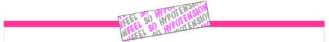

|  |
|
2007.08.25 Saturday
CanCan
専属モデルが一堂に会しキュートな装いを披露してくれる夢のようなCM。30秒編があるらしいが、まだ見たことないです。
日本の女性もスーパーモデルに負けてないぞ こちらは明治製菓のFran。香りの魔術で七変化(古ぅ)を見せるは沢尻エリカ。 CMにつられてセブンイレブンでついFran買っちゃいました。ふにゅぅ〜。 book shop mbookshop-m.com マッチアンドカンパニー町口覚が発行新進気鋭の写真家
による写真集を販売写真のことなら"iPhoto"www.apple.com Macで使えるiPhotoなら写真の管理や編集が楽
しく簡単 詳しくはこちら |
|
|